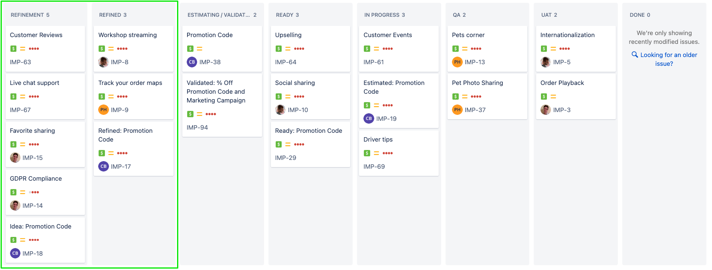
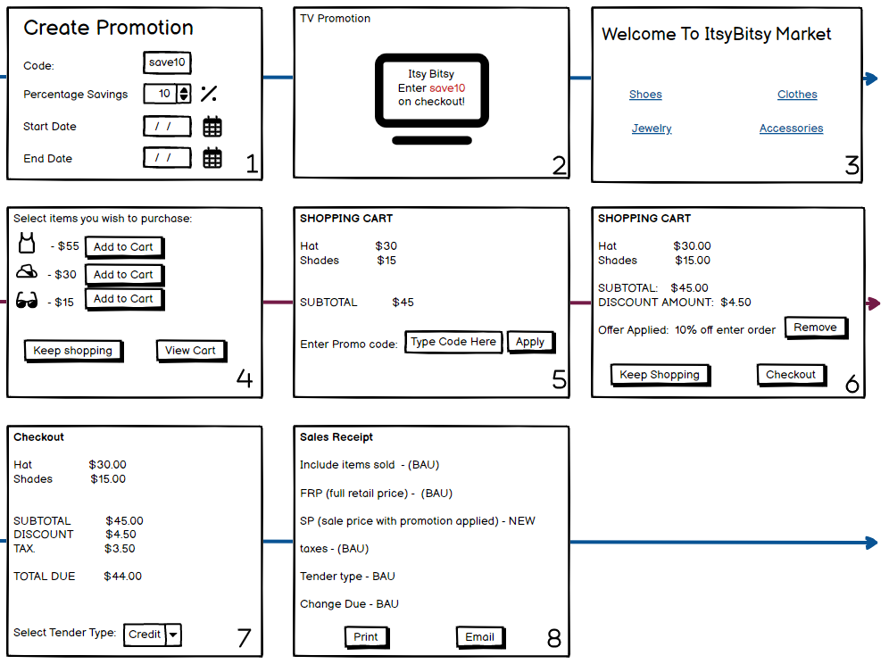

Refinement page
Learn how to refine an initiative from an idea into something ready to be validated and estimated.
Overview
The purpose of the refinement stage is to clarify the functionality of the initiative well enough so it can be validated, estimated, and eventually prioritized.
We will learn:
What is needed to “refine” an initiative
How to move initiatives into and out of the
RefinementandRefinedstatuses in the Jira board

For the exercise, you will refine your initiative, using your team members and instructors as pretend stakeholders, engineers, designers, and business analysts to answer questions.
The following is the Google Slides presentation for this material:
What are the goals of refinement?
Getting to a Refined status is ultimately about making sure everyone has enough detail to effectively prioritize the initiative, but not so much detail that it takes too long to make a decision.
To prioritize an initiative, you ultimately need to know how much value the initiative might create and how much effort or costs the initiative will consume.
A good rule of thumb is that the initiative should have enough detail enough to validate AND estimate it with at least about 50% confidence.
What’s needed for refinement?
A fully refined initiative will not only expand the idea content, but it will typically update the content that was provided in the idea status.
This means that the initiative’s title, description, impact, and problem statement might all be changed. Furthermore, we also recommend adding the following sections:
People - Who influences the shape of the story: Stakeholders, Engineers, etc.
High level use cases - What the user will be doing. Include positive and negative outcomes. Ideally, these are coupled with a wireframe when the use case involves a user interface (as opposed to a data operation or transformation).
Out-of-scope use cases - The use cases or workflows will not be included.
Considerations - Technical or other considerations or assumptions related to the initiative.
Questions - Open questions and concerns still to be answered.
The following shows the result of updating the “Promotion” initiative from idea to refined:
% Off Promotion Code and Marketing Campaign
Itsy Bitsy will offer a limited-time discount via a promotion code, distributed via a Marketing campaign.
The promotion will be a % off Promotion code that enables a discount on the entire cart.
Problem
We need to provide customers with an incentive to visit Itsy Bitsy and make purchases.
Impact
We hope to increase our revenue by 2x the amount spent on Marketing ads.
- Value - We expect to see an increase in revenue of $100K as a result of the promo code Marketing Campaign.
- Value confidence - 50%
People
- Fred Ylem - CMO
- Janice Savage - Order Engineering Manager
User Flows
Happy path user flow
Wireframe: https://balsamiq.cloud/s215txw/pjf0pgd/r201E
Promotion needs to be created in Admin tool
Customer see ad on TV or other channels with code
Customer goes to the website
Customer selects items to add to Cart
Customer views cart
Customer enters promotion code
Promotion is applied and shows discount. There is no ability to add another promotion code.
Customer checks out
Receipt shows discount
Wrong Promotion Code Entered
Customer enters the promotion code and hits apply
Validation check against entered promotion code is done and offer is invalid
An error message is displayed on screen indicated an invalid promotion code is being used.
Customer given option to re-enter the promotion code
Remove the promotion code from Cart
Customer enters the promotion code and hits apply
Promotion is applied and shows discount.
Customer selects remove button to clear promotion code entry
Customer is able to add a promotion again if they choose
Promotion End Date Error Handling
A customer adds the promotion to their cart before the promotion’s end date.
The customer tries to checkout after the promotion’s end date.
The customer sees an error in checkout with a warning the promotion has expired, and they should remove the promotion.
The user removes the promotion.
Out of Scope
The ability to add multiple promotions at once
Promotion limits
Any other type of promotion capability
Considerations
- This will start with a TV ad, but we may do some print media
Questions
JaniceHow will we turn off the promotion?
A:Fred- Delete the promotion in the admin tool.
In the next sections, we will break down our approach to adding these new sections.
Writing the People Section
The people section is a list of people who should be consulted on the direction and development of the initiative. Who are the subject matter experts? What people from other departments will you need to work with? Who are the engineering and architecture leads who will help you estimate the work and guide what is in and out of scope?
Writing the High-Level Use Cases Section
The goal of defining the use cases is to try and capture the ways different users will use the proposed solution. The use cases should be end-to-end, that is, they should encompass all the major interactions necessary to result in the desired impact and solve the initiative’s problem.
We suggest writing the “happy path” use case first. The “happy path” is the most likely path that solves the initiative’s problem.
The use cases should also include the major “unhappy paths”. These are the critical paths where things might go wrong: edge cases, users doing something unexpected.
When writing these high-level use cases, there’s a few things to keep in mind:
It’s important to keep the use cases simple and straightforward, without much detail. You’re trying to scope out the general solution, without being prescriptive.
You should be looking to remove scope whenever possible. If you can release something early, get feedback, and then iterate, you’ll almost always be better off being better informed. Put any items that can be deferred in the Out-of-scope section.
These use cases will eventually be useful for breaking down the work and estimating.
Building a Wireframe User Flow
A picture is worth a thousand words. A wireframe is, by far, the easiest way of getting consensus around what a solution might look like. We strongly suggest wireframing the user journey. Typically, we end up discussing and sharing the wireframe much more than the written use cases.
The following is the lo-fi wireframe we created for promotions:

Wireframing can be a bit dangerous. The wireframes you create can be “sticky”, that is, these designs might set expectations and glue people to the specifics of the wireframe, preventing alternative user flows and designs from being explored. You hopefully have a team of highly skilled product designers and usability experts whose entire job is to determine the final design that best solves the initiative’s problem.
To balance these concerns (getting consensus while leaving room for design changes), wireframing should be done very “ugly”. Do not make the designs look nice. We suggest balamiq as a wireframing tool. It can build most user interfaces very quickly but also results in designs that are sufficiently unpolished.
Writing the Out-Of-Scope Section
The out-of-scope section is a list of features that will not be included in the release.
The out-of-scope section is arguably more important than the use case section. We should strive to limit the scope of the initiative to a Minimal Marketable Feature (MMF). A Minimal Marketable Feature is the smallest iteration of the initiative where some impact can be felt by the customer (or the product team). This is the shortest path for the team to collect feedback and continue confirming value. If you can release something early, get feedback, and then iterate, you’ll almost always be better off being better informed.
If you are a consultant, this section can be particularly important to manage customer and stakeholder expectations.
Writing the Considerations Section
The considerations section is anything that you uncover while scoping the initiative that should be retained while working through the initiative. Examples might include:
Technical limitations or challenges
Resourcing limitations or challenges
Related work items or initiatives
Any known unknowns.
Writing the Questions Section
The questions section details any questions you or other team members might have about the initiative. When answers are known, they should be included. It’s also a good idea to indicate who asked and answered the question.
Example Questions might include:
Questions on the use cases or wireframes
Questions on the technical implementation
Questions on timelines
The Refinement and Refined Columns
The continuous exploration board has a Refinement and Refined column.
The Refinement column is the list of initiatives that you and other Program Managers are refining. Once refinement is complete, those initiatives move into the Refined column. Finally, once an initiative is ready to be validated or estimated, the initiative will move into the Estimating / Validating column.
The Refinement and Refined columns should be sorted by priority (which initiatives have the most value).
The Refined column can be thought of as a backlog of “concrete” ideas ready to have their value more accurately verified and their cost more accurately estimated.
Moving initiatives into Refinement
If the team responsible for scoping initiatives has capacity, then initiatives can be moved into the Refinement status. Make sure to assign the person responsible for scoping the initiative.
For a product that is already released, a product manager might take on one or two initiatives every sprint (assuming that sprints are used and sprints are 2 weeks). Often, a product manager might be working through several initiatives at once as initiatives might take anywhere from 1 to 6 weeks to get ready for development.
We will go into more detail on how to manage the overall continuous exploration process in the Management part of the training.
Promoting an initiative to Refined
An initiative is Refined when it clarifies a proposed solution “well enough” to the product team so the product team will be able to:
Explore ideas on how to evaluate and validate if the proposed solution will achieve its goals.
Estimate the work
A product manager will likely have a few rounds of meetings with team members to document all the sections above. Once the product manager feels like there is sufficient clarity, the product manager should review their initiatives with the team and stakeholders before moving into the refined status.
Ultimately, the team will actually need to validate or estimate the initiative to truly know if it has enough details, but over time a product manager will develop a strong sense of when enough clarity has been achieved.
Moving initiatives to Validating
We go into detail about when and how initiatives move into the Validating status. In short, when the product team has agreed to what is necessary for validation and they have the capacity to take on the work, the initiative’s status should be changed to validating.
Exercise
In this exercise, you will refine your initiative, using your team members and instructors as pretend stakeholders, engineers, designers, and business analysts to answer questions and shape the initiative.
Step 1: Decide Roles
Unfortunately, we don’t have a full product team at this training. So the instructors and other trainees will need to pretend to be team members across the Itsy Bitsy organization.
For this step you will need to:
Decide what “people” your initiative will need to involve.
For most initiatives, you will need:
- A product manager to help decide what is in and out of scope
- Engineering leadership from each product team✏️ Write these people in your “people” section.
Decide who will perform which role.
Discuss with the team the different people you need. The instructor will help determine which trainees or instructor(s) will take on which roles.
✏️ Write the specific people in your “people” section.
Step 2: Write up the additional sections
Take your first attempt at writing up the additional sections:
Use cases, including wireframes
Out-of-scope
Considerations
Questions
You will get to review with your team in the next step.
Step 3: Review with your team
Review with the people identified in your initiative. Get your questions answered.
Step 4: Update the initiative
If the initiative wasn’t clear, or there were things missing, update it.
Step 5: Final Review
Ask your team if they think they understand the initiative well enough:
Are behaviors well enough known that if they were to build the solution, folks wouldn’t be surprised by the result.
Could they “validate it”
Could they estimate it
If they can, move the initiative to “refined”.